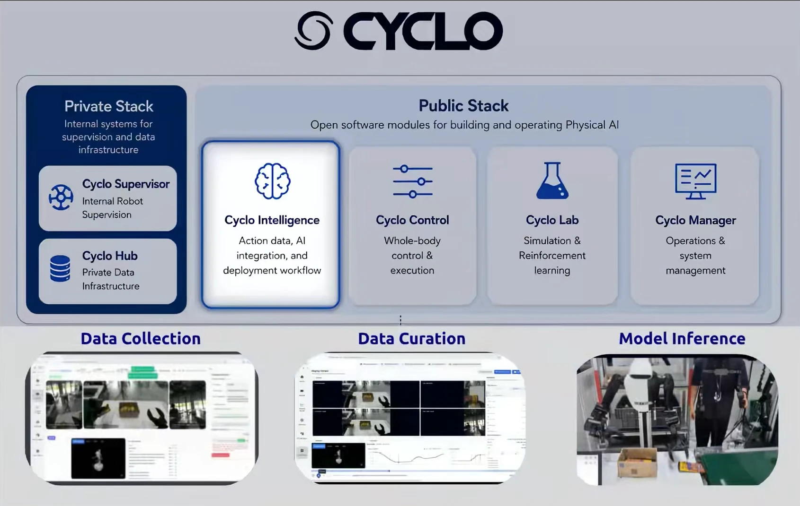
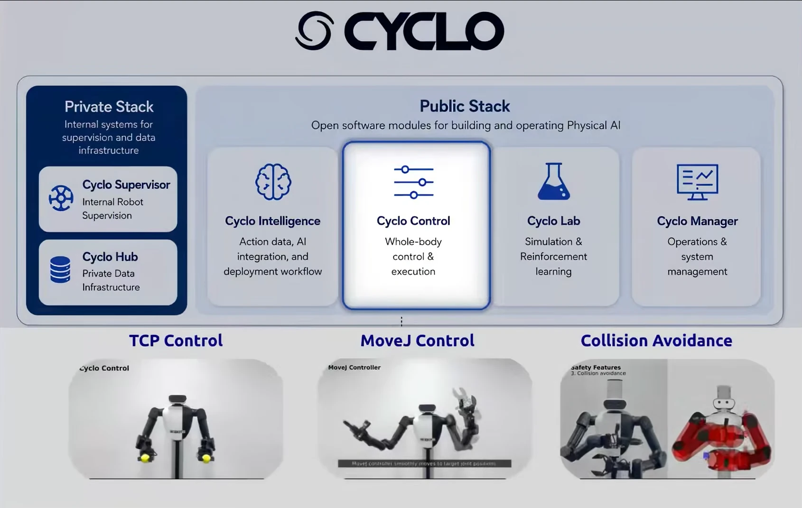
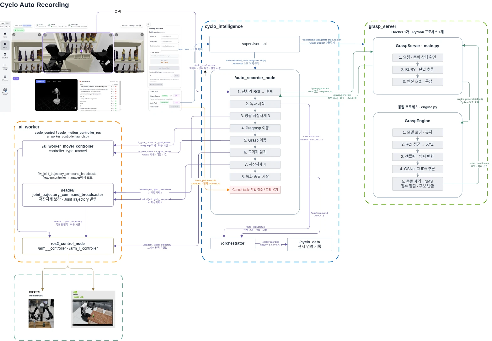
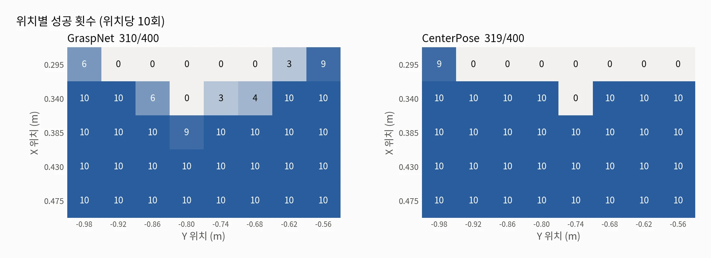
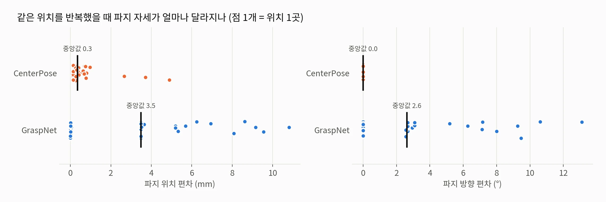
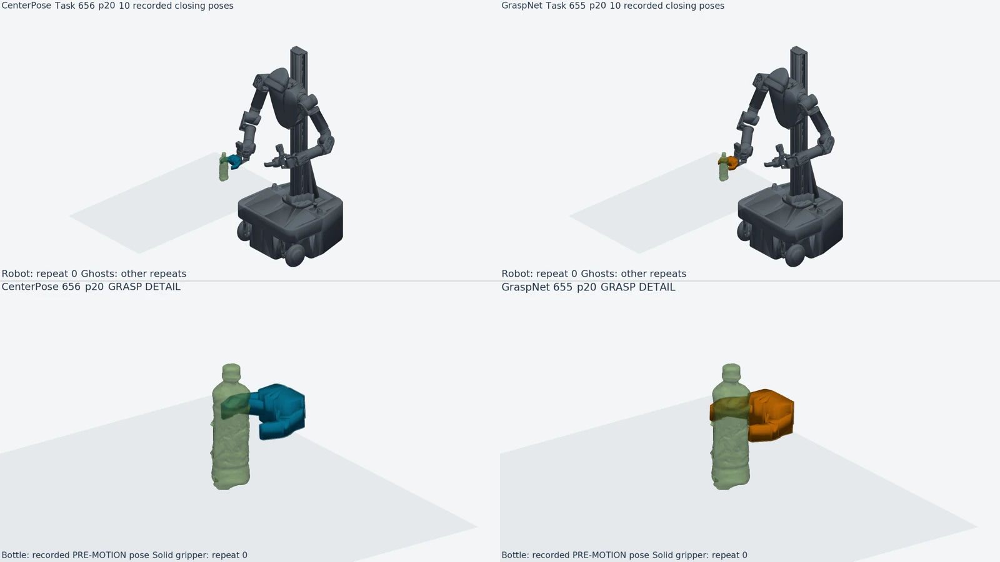
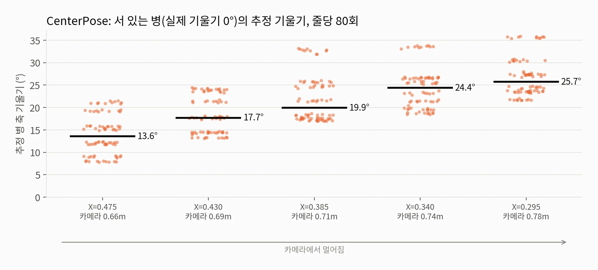
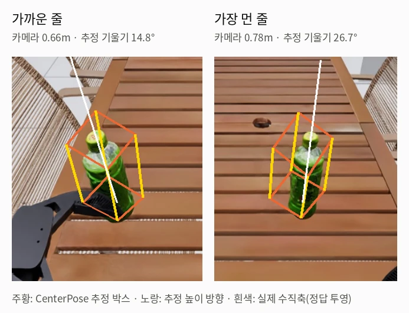
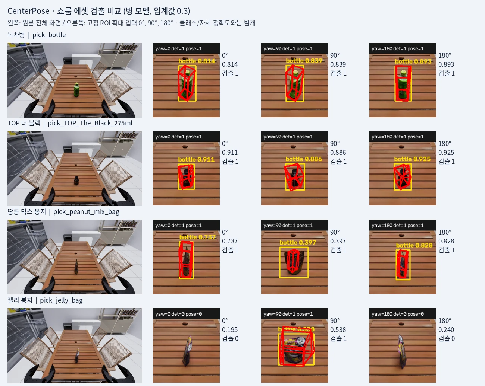
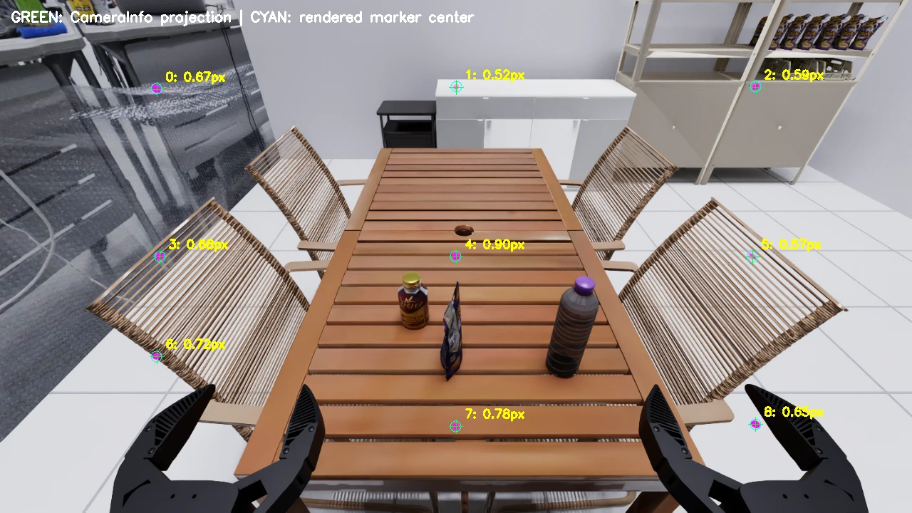

System Setup
개인 프로젝트로 ROBOTIS 오픈소스 위에 자동 수집 파이프라인을 구현했습니다. 데이터 수집과 관리는 Cyclo Intelligence, 경로 계획과 제어는 Cyclo Control을 사용했습니다.
브라우저에서 병을 클릭하면 주변 점군으로 파지 후보를 만들고, 접근·파지·들어 올리기·녹화를 이어서 실행합니다. 병을 3.5 cm 이상 들어 0.5초간 유지하고 녹화까지 완료된 시도만 학습용 시연으로 저장합니다.



상세 시스템 흐름도

병 파지 시연 수집
병 위치를 5줄 × 8열 격자로 고정하고, 각 위치에서 파지 후보 생성기마다 10회씩 반복했습니다.

Result
Isaac Lab에서 서 있는 녹차병 한 종류를 40개 위치에 놓고 자동으로 파지 시연을 수집했습니다. CenterPose와 병 전용 파지 규칙으로 400회 중 319개(79.8%), GraspNet으로 400회 중 310개(77.5%)의 성공 시연을 저장했습니다.
각 데이터로 따로 학습한 시각·언어·행동 모델(Vision-Language-Action, VLA)은 같은 40개 위치에서 각각 120회 중 75회(62.5%) 파지에 성공했습니다. 평가는 시뮬레이션에서 수집에 사용한 위치를 재사용했습니다.
Challenge 1: 파지 후보 생성기 비교
문제
GraspNet으로 모은 수집 결과가 고르지 않다는 피드백을 받았습니다. 클릭한 병을 어떤 자세로 잡을지 후보를 만드는 단계에 CenterPose 방식을 붙여 같은 조건에서 비교했습니다.
| GraspNet (GSNet) | CenterPose + 고정 파지 규칙 | |
|---|---|---|
| 입력 | 클릭 주변 점군 | RGB 이미지 + depth |
| 출력 | 6자유도 파지 후보 여러 개와 점수 | 병 3D 박스 → 중심 위치 |
| 파지 방향 | 모델이 후보마다 추정 | 고정 규칙 (추정 자세는 쓰지 않음) |
| 물체 가정 | 없음 | 서 있는 병 |
| 충돌 검사 | 점군 기준 필터 | 없음 (IK 검증만) |
| 연산 | GPU (CUDA) | CPU (ONNX Runtime) |
고정 위치 수집 비교
| GraspNet | CenterPose | |
|---|---|---|
| 성공 | 310/400 (77.5%) | 319/400 (79.8%) |
| X=0.295m (가장 먼 줄) | 18/80 | 9/80 |
| X=0.340m | 53/80 | 70/80 |
| X=0.385·0.430·0.475m | 239/240 | 240/240 |
| 같은 위치 반복 시 파지 위치 편차 (중앙값 / 상위 10%) | 3.5mm / 8.5mm | 0.3mm / 0.9mm |
| 같은 위치 반복 시 파지 방향 편차 (중앙값 / 상위 10%) | 2.6° / 8.9° | 0.0° / 0.0° |
| 최대 들기 높이 중앙값 | 5.3cm | 5.4cm |
| 시도당 소요 시간 중앙값 | 28.6초 | 27.6초 |
편차는 성공한 시도의 Grasp 목표 자세를 위치별로 모아, 위치 표준편차와 평균 방향으로부터의 각도 차이로 계산했습니다(2회 이상 성공한 위치만: GraspNet 34곳, CenterPose 32곳).



실패 171건 중 169건은 목표 자세에 맞는 팔 관절 각도를 구하는 역기구학(Inverse Kinematics, IK) 단계에서 후보가 모두 탈락한 경우였고, 가장 먼 줄(X=0.295m)에 몰렸습니다(성공 27/160). X=0.430·0.475m 줄은 모두 성공했습니다. 관절 한계 때문인지 충돌 때문인지는 분리하지 못했습니다.
CenterPose 추정의 한계
1. 자세가 기울어 나오고, 멀수록 더 기울어짐. 위 실험 400회에서 서 있는 병의 추정 높이축이 수직에서 벗어난 각도를 줄별로 계산했습니다.
| 줄 | 카메라까지 거리 | 내려다보는 각도 | 기울기 중앙값 (상위 10%) | 수평 중심 오차 중앙값 | 수집 성공 |
|---|---|---|---|---|---|
| X=0.295m | 0.78m | 44° | 25.7° (35.4°) | 17mm | 9/80 |
| X=0.340m | 0.74m | 46° | 24.4° (33.3°) | 19mm | 70/80 |
| X=0.385m | 0.71m | 48° | 19.9° (31.9°) | 11mm | 80/80 |
| X=0.430m | 0.69m | 51° | 17.7° (24.0°) | 10mm | 80/80 |
| X=0.475m | 0.66m | 54° | 13.6° (20.9°) | 10mm | 80/80 |


카메라에서 멀수록 기울기와 중심 오차가 커졌습니다. 다만 멀수록 카메라가 덜 내려다보게 되므로, 거리 때문인지 보는 각도 때문인지는 나누지 못했습니다. 표식 9개를 6프레임에서 투영해 렌더링 영상과의 평균 차이가 0.66 px임을 확인했습니다. 최종 파지 자세는 CenterPose가 추정한 중심 위치와 서 있는 병 전용 방향 규칙으로 정했습니다.
2. 물체 종류마다 모델이 따로 필요하고, 점수로 종류를 가리지 못함. CenterPose는 병·시리얼 상자처럼 범주별로 모델이 나뉩니다. 쇼룸 에셋 11종 × 회전 3개로 시험했을 때(추가 학습 없음, 임계값 0.3) 병 모델은 플라스틱 병뿐 아니라 커피캔 5종(15/15장)과 과자 봉지(땅콩 3/3, 군밤 2/3)에도 병으로 반응했습니다.
3. 화면에서 작게 보이면 검출하지 못함. 같은 시험에서 카메라 전체 화면(672×376)을 넣으면 병 9장 중 0장, 병 주변을 잘라 넣으면 9장 모두 검출했습니다. 수집 실험은 1280×720에서 병이 약 160~180px 높이로 보여 검출됐습니다.


학습된 정책 비교
각 데이터로 별도로 학습한 정책을 같은 40개 위치에서 위치당 3회 평가했습니다. 시도당 제한 시간은 30초이며 성공 기준은 수집과 같습니다.
| 정책 학습 데이터 | 전체 | X=0.295 | X=0.340 | X=0.385 | X=0.430 | X=0.475 |
|---|---|---|---|---|---|---|
| GraspNet 시연 310개 | 75/120 | 5/24 | 11/24 | 19/24 | 22/24 | 18/24 |
| CenterPose 시연 319개 | 75/120 | 1/24 | 14/24 | 20/24 | 22/24 | 18/24 |
CenterPose 방식은 같은 위치에서 파지 자세 편차가 작았습니다. 두 정책의 전체 파지 성공 횟수는 같았고, 위치별 결과에는 차이가 있었습니다. 위치당 평가 횟수는 3회였습니다. 서 있는 병의 시연 수집에는 CenterPose 방식을 사용했습니다. GraspNet의 다른 형상 파지 성능은 추가 검증이 필요합니다.
Challenge 2: 학습 메모리 부족
문제
RTX 5090(32 GB) 한 장에서 NVIDIA GR00T N1.7 학습을 시작했지만 첫 최적화 단계에서 메모리가 부족했습니다. 고정한 언어·영상 백본을 32비트(FP32)로 유지하면 fused AdamW를 적용한 뒤에도 같은 문제가 발생했습니다.
해결
언어·영상 백본은 16비트 부동소수점(BF16)으로 불러와 고정하고 fused AdamW를 적용했습니다. 약 31.4억 개 파라미터 중 연결부와 동작 생성부 약 16.2억 개를 학습했습니다.
Result
배치 크기 8, 학습률 0.0001로 150,000스텝까지 학습을 완료했습니다.
Challenge 3: 평가 중 팔 명령 간섭
첫 평가에서는 두 정책 모두 거의 파지하지 못했습니다. 팔을 저장된 자세로 유지하는 제어기가 일시 정지 상태에서도 명령을 보내고 있었습니다. 해당 제어기를 비활성화하고 매 시도 전에 외부 팔 명령이 없는지 확인한 뒤 정책을 다시 평가했습니다.
남은 문제
로봇 팔 떨림이 일부 시험에 영향을 줬습니다. 가장 먼 줄에 집중된 역기구학 탈락은 관절 한계와 충돌 중 어느 쪽이 원인인지 구분하지 못했습니다.
학습에 사용하지 않은 위치, 누운 병과 다른 형상, 실물 로봇은 추가 검증이 필요합니다.